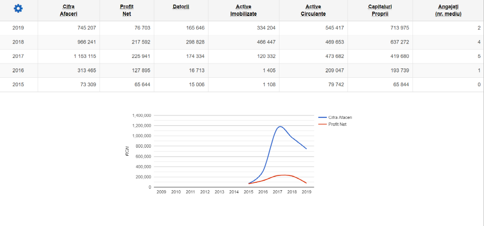

Project description
CERES is a modern application that uses state-of-the-art technology to help farmers.
From a better record of costs to increase productivity, crop rotation, soil measurements and introduction of new ones, but also measurements of operations performed in the field every day as the area worked, monitoring equipment, speed or number of hours in which it stood the operator with the engine running, until the record of the different quantities of inputs applied on each soil, of the quantities harvested from each soil, of the most productive varieties, as well as many other very useful functions for farmers, CERES is the partner you trust that will always give you the exact information, in real time, to make the development of your farm much easier.
Problem
Any form of mass agriculture needs to be adapted to globalization and entered a new era: the Age of Technology. In order to make the agricultural part oriented on the high culture activity much more profitable it needs to be be much more efficient.
Solution
Each season, farmers have to make decisions about the quantities of fertilizers and plant protection products they are going to use. Satellite surveillance of agricultural land helps farmers make significant savings. A control panel allows them to monitor the productivity of cultivated areas and to permanently analyze historical data, including meteorological. In this way they can optimize the doses of agrochemicals, reducing the impact on the environment.
Customer segments
Our app will serve the agriculture companies that want to minimize the costs of managing cultivated land and maximize the productivity alerting agrochemical and water needs by studying the weather effect. Therefore, they will be much more efficient only if their agricultural system is integrated "from the ground to the satellite".
Competition

Advantages over competition
Better visualization of the arable field on an intuitive map
Improved forecast on quantities of fertilizers and plant protection products that need to be used
Friendlier User Interface
Key metrics
Relevancy of new features
User retention
User engagement
Customer lifetime revenue
Metrics on back-end side for latencies
Search Engine Optimization
Cost structure
Revenue streams
The most revenue will come from the following:

Advertisements
Subscriptions
Sponsorships
Licensing content to third parties
Valiation 1
Identifying the problem
We identified the problem by talking to Mihai, a friend whose family runs a farm in Teleorman county. He told us that his family was complaining about the yield this year, due to unfavorable weather conditions in the summer along with pests interfering with the crops. Together, we came to the conclusion that more efficient monitoring of crops can uncover problems within the crops early and as a result increasing productivity by acting in time to heal the crops by providing artificial irrigation and pesticides.
With this problem in mind, we wanted to see if there are any other farmers that are dealing with productivity loss that can be prevented by efficient monitoring. So after talking to Mihai's father, we asked him to get us in contact with other farm owners.
In the end, we defined the main problem as being that any form of mass agriculture needs to be adapted to globalization and entered a new era: the Age of Technology. In order to make the agricultural part oriented on the high culture activity much more profitable it needs to be be much more efficient.
Initial Solution
In order to efficiently monitor the crops, we think the best idea is
to use technology in our advantage.
What if we swap the human manual monitoring with drones that can fly around
the field and scan the crops' health? Well, this is a good idea, but buying
drones is really costly.
So we had to think deeper to find a very cheap and efficient way of providing
insight into the cultivated area's health. And we concluded that satellite
based monitoring can be the cheapest, yet a very efficient way to achieve
our goal. There are free available satellite images that go back entire decades,
so we can provide an extensive journal of crops evolution by analyzing these images
and building informative maps for the farmers.
General Plan
For the idea validation we proposed to talk to as many farmers as possible. The first step was to talk to Mihai's father and then we would try to reach to the contacts he gave us.
Clients' Problem Validation
Because we were not able to talk with the farmers face to face, we thought the best idea would be to create a form that would address our questions. We wanted to know if other farmers have the same problems that could be solved by digital monitoring.
We shared the form to multiple farm owners and managed to get responses from four of them.

The four farmers own a total of 873 hectares in Teleorman.

Out of the four, three of them said they confront uneven crops. This means they have land ares where the yield is weaker than average. We can help them increase the average by improving the average health of plants through smart monitoring.

As one can see, between 0-40% of the crops are affected. Our goal is to reduce this percentage and increase overall productivity.

Half of them use some method of crop health monitoring, but let's see what
methods they use.


We observed a pattern! Both farmers that used some kind of monitoring used visual observations the health and humidity. When looking at their budget, and the number of hectares they own, we calculated an approximate cost of 1.5 euros/hectare. For very large farms, this cost can increase very much by hiring more people that are responsible of health monitoring. We can reduce this cost somewhere around 0.5 euro/hectare. This means large farm owners will pay one third of the price they usually pay.


Another main factor that influences crop health is soil humidity. Most of our interviewed farmers don't artificially irrigate their crops.


Finally, all of them would appreciate the utility of a digital monitoring system that can provide insight into meteorological conditions as well as statistical/real-time data about crop health.
Wireframes and Landing Page
Access our landing page here.


The wireframes for Ceres can be found below.
Web Version
UX
Interviews
To enrich our knowledge about our users and what they want, we interviewed 3 business owners dealing with agriculture. We wanted to find out if our product would improve their businesses performance. We had 5 main questions in mind to ask, but depending on how the interview went, we were flexible. Here are the questions:
- What is your agriculture business focused on?
- How many hectares of land do you own?
- How do you monitor your crops?
- Do you think your current method of monitoring is efficient?
- What do you think about a satellite based monitoring system that can provide insight into your crops' health and alert you in case of anomalies?
- Buna ziua, multumim ca ati acceptat invitatia noastra pentru acest interviu. In primul rand, ne puteti spune cate ceva despre dumneavoastra si afacerea dumneavoastra?
- Salut! Ma numesc Strimbu Marian, sunt proprietarul societatii Corola Prod. Despre afacerea mea, pot sa va spun ca detin o brutarie, dar ma ocup si cu producerea de grau pentru brutarie, dar si pentru vanzare.
- Am vrea sa discutam in continuare despre afacerea dumneavoastra din agricultura. Spuneti ca produceti grau, asa ca am dori sa va intrebam cate hectare de teren detineti?
- La momentul actual, detin 70 de hectare in jurul comunei Piatra, Teleorman.
- Cum monitorizati starea acestor 70 de hectare? Aveti oameni angajati care sa verifice cultura?
- In general, verificam direct la fata locului. Am 2 angajati impreuna cu care merg pe teren in mod regulat pentru a verifica starea graului.
- Credeti ca aceasta este cea mai eficienta metoda?
- Nici pe departe, insa in cazul meu, 70 de hectare nu sunt asa mult, ma descurc destul de bine. Singurul dezavantaj ar fi ca trebuie sa ma duc in persoana pe camp, vara, la 40 de grade.
- Ca tot ati adus in discutie faptul ca vara este foarte cald, cum va descurcati cu irigatul culturilor?
- In general, nu irig artificial pamantul, insa acest lucru are si dezavantaje, spre exemplu anul asta nu prea a plouat si productia de grau a scazut fata de anii mai ploiosi.
- Credeti ca v-ar ajuta o solutie de monitorizare digitala? Ne referim aici la un sistem informatic care v-ar permite sa monitorizati starea culturii direct de pe laptop sau telefon, care va poate trimite alerte in cazul unor zone afectate de lipa apei sau alti factori. De asemenea, va poate arata detalii despre starea meteo in zona culturilor dumneavoastra.
- Suna bine! Insa depinde si de costuri. Eu v-am spus, ma descurc cu 2 oameni, deci nu cheltui asa multi bani, insa ma gandesc ca pentru cineva cu un teren mult mai mare, aceste costuri pot creste.
- Care ar fi un pret bun la care va ganditi pentru monitorizarea unui hectar de teren?
- Orice pret care imi reduce costurile, pana la urma e un pret bun. Cu 2 angajati cheltui 2 salarii minime, insa acestia se ocupa si de alte lucruri.
- In regula. Va multumim mult pentru timpul acordat! O zi buna!
- Buna ziua, multumim ca ati acceptat invitatia noastra pentru acest interviu. In primul rand, ne puteti spune cate ceva despre dumneavoastra si afacerea dumneavoastra?
- Buna ziua, eu sunt Marius si ma ocup in mare parte cu cresterea de legume.
- Cate hectare de teren detineti?
- 50 de hectare, iar majoritatea sunt acoperite cu solare.
- Monitorizati starea legumelor din solare? Daca da, cum?
- Am angajati care se ocupa atat cu verificarea calitatii, cat si cu ingrijirea plantelor. Legumele au nevoie mai mare de atentie decat o cultura de camp, deci in general incercam sa acordam o atentie mai mare.
- Credeti ca aceasta este cea mai eficienta metoda?
- Nu vad sa existe o abordate cu mult mai eficienta, pentru ca legumele oricum au nevoie de o ingrijire manuala, iar culegerea la fel, se face tot manual. Practic verificarea calitatii se face constant.
- Am inteles. Am putea sa tragem concluzia ca nu v-ar fi de folos un sistem digital care sa va ajute la monitorizare folosind imagini din satelit, in special cultura fiind acoperita de solare.
- Da, intr-adevar. Vad insa o aplicare in monitorizarea culturilor neacoperite, deci va urez succes pe mai departe.
- Multumim mult! O zi buna!
- Buna ziua, multumim ca ati acceptat invitatia noastra pentru acest interviu. In primul rand, ne puteti spune cate ceva despre dumneavoastra si afacerea dumneavoastra?
- Salut! Am inteles ca vreti sa vobim despre agricultura, asa ca printre altele, detin teren pe care se cultiva cereale.
- Cate hectare de teren detineti?
- Eu 183, iar cumnatul meu 500.
- Cum va descurcati cu monitorizarea sanatatii acestor terenuri si a cerealelor plantate?
- Nu monitorizam in niciun fel. Ar fi un cost destul de mare sa angajam oameni sa verifice regulat toate aceste hectare.
- Credeti ca daca ati putea monitoriza la un cost destul de mic, v-ar ajuta sa cresteti productivitatea?
- Desigur, in fiecare an ne confruntam cu seceta si paraziti. Din acest motiv, folosim diferite erbicide, fungicide si alte tratemente. O monitorizare eficienta si la un cost redus, desigur, ar ajuta in sensul ca putem targeta zonele mai afectate.
- In acest caz, va propunem sa discutam despre un sistem informatic bazat pe imagini din satelit care poate monitoriza automat si la un cost bun starea culturior folosind metode avansate de detectie a anomaliilor in culturi. In cazul unei detectii, va poate trimite alerte cu privire la actiunile ce pot fi luate pentru a remedia situatia. De asemenea, va poate informa cu privire la starea meteo, in cazul in care doriti sa irigati eficient pamantul.
- In teorie suna bine. Dar sa vedem cum functioneaza in practica, nu?
- Desigur, va tinem la curent cu procesul de dezvoltare. Va multumim mult pentru timpul acordat! O zi buna!
Usecases
Validation 2
Promoting the landing page
We brought people to our landing page through posts on social media platforms such as Facebook and Twitter. The posts would give a brief description of our solution as well as a link to the landing page. Within our landing page, we included a Formspree form, through which interested users could sign up to our newsletter. Furthermore, we used LinkedIn as a means to spread our idea to people in different fields of activity.
Analyzing the traffic using Google Analytics
We integrated Google Analytics in order to monitor the user activity on our landing page. We have been sharing our landing page on different social media platforms starting with 30th of November. The illustrated analysis is made over data collected between 30th November and 6th of December. The graph below shows the user traffic on our landing page, as stated on our Google Analytics profile.
The metrics provided helped us realize the interaction they had with our website. We concluded that:
- 75% of the sessions were initiated through a referral link
- the average duration of the session was 6 minutes, 12 seconds
- the total number of users that accessed the page is 62
- out of these 62 users, 56% visited our landing page via desktop and 44% via mobile phones
Analyzing the traffic using Hotjar
Moreover, we integrated Hotjar in order to analyze the experience of our visitors. The heatmaps told us where the users clicked most of the time and how far they scrolled on the page.
Heatmaps for desktop users
For the desktop users, Hotjar provided a heatmap that highlights the places on website that were clicked the most. We recorded a big number of clicks on the "Learn more" button as well as on the "Contact" button. The "Services" and "About" buttons were also accessed but in a smaller percentage. Most of these users stayed on the first segment of the website, with the average reaching the "About" section.
Heatmaps for mobile users
Mobile users, had mostly the same pattern as the desktop users. However, the average user did not scroll to the End of the page, reaching only the first quarter of the website.
Conclusion
After analyzing the results presented, we decided that the promotion on social media platforms, mostly Facebook, generated significant attention for our project, encouraging the users to subscribe to the newsletter. Most of them accessed the link to our landing page and navigated through the content that was presented, giving them enough insight about our start-up.
Market Research
Size of the Target Market
The initial target market is Romanians medium an big firms which have an activity in agriculture, later developing our business for the European market. Romania has 14.8 million active arable ha and represents the source for 5% of the national GDP. Even if less than 1% of the arable land is supervised by satellites agriculture is a very profitable business with more than 60% of the firms making a profit. Fortunatelly for the other 40% and even for the majority, Ceres is aiming to help their harvest be bigger than ever by processing data for each of their fields, so that they monitor their crop's development in near real-time.
Competitors
After thorough research, we found just 2 competitors with no clear monopoly over the market segment:
SatAgro is a polish company which make use of satellite imagery from NASA, the European Space Agency and private satellite operators by processing data for each of your fields individually and send it to in an easy-to-understand format that will help you to increase your farm’s efficiency.
AgriSo is modern application that uses satellite technology to help farmers providing a record of costs to increase productivity, crop rotation, soil measurements and the introduction of new ones but also measurements of operations performed in the field every day as the area worked, monitoring equipment, speed or number of hours in which it stood operator with engine running.
| Activity | SatAgro | AgriSo |
|---|---|---|
| Crop monitoring | Yes | Yes |
| Historical data | Yes | Yes |
| Event and treatment log | Yes | No |
| Prescription maps | Yes | Yes |
| Alarms | No | Yes |
| Geolocation | Yes | Yes |
| Data export | Yes | Yes |
| Weather forecast | Yes | Yes |
| Consulting | No | Yes |
| Soil sampling support | Yes | No |
| User data import | Yes | Yes |
SatAgro
Professional (2.5 Euros / ha a year)
- Satellite monitoring of your farm
- Prescription maps
- Guidance for accurate soil sample selection
- Technical support
- All services included in Professional
- High resolution monitoring with "Planet" Sensor integration
- Agronomy advice
AgriSo
Depending on the amount of land the price can vary from 3 to 4 Euros / ha a year
Potential Market share in 5 years
In Europe there are only 2 competitors with just one of them playing a role in Romanian agriculture currently providing services for 90% of the market share of agriculture firms who use satellite technology for their business model. The two most important advantages for us are that they not only had they already hit their peak and their application is not updated to today’s standards but also 99,3% of active arable land is left to try this new technology and is actually seeking a phase of modernization.
AgriSo Balance Sheet
| Year | Solution | Market Share |
|---|---|---|
| 1 | SatAgro | 9.70% |
| 1 | AgriSo | 75.20% |
| 1 | Ceres | 15.10% |
| 2 | SatAgro | 8.60% |
| 2 | AgriSo | 52.70%% |
| 2 | Ceres | 38.70% |
| 3 | SatAgro | 7.10% |
| 3 | AgriSo | 17.70% |
| 3 | Ceres | 75.20% |
| 4 | SatAgro | 3.70% |
| 4 | AgriSo | 9.20% |
| 1 | Ceres | 87.10% |
| 5 | SatAgro | 2.50% |
| 5 | AgriSo | 3.40% |
| 5 | Ceres | 94.10% |
Market Value in first 5 Years
The satellite monitoring agriculture business is an industry of 180.000 euros as in 2019 in Romania. With a 10% increase of the industry each year and winning over the market share as planned by having the newest and most accurate app for monitoring crops using satellite technology our market value would look as following:
| Year | Market Share | Market Value (eur) |
|---|---|---|
| 1 | 15.10% | 27420 |
| 2 | 38.70% | 76626 |
| 3 | 75.20% | 162434 |
| 4 | 87.10% | 203814 |
| 5 | 94.10% | 237132 |
Minimum Viable Product
Features
With the information gathered in the previous milestones, we built an MVP that consists in a Web Application that features an interactive map where users can monitor their crops. The MVP provides the most basic usecases that a user would need to interact with our platform.
Here is a list of features we achieved while building the MVP:
- User Registration/Login
- An user can add his crops into the platform by importing a .zip archive containing shapefile data downloaded from APIA website.
- Once the user's crops have been loaded into the platform, our servers start analyzing the available imagery for those crops. By default, we analyze all the available data since 01-07-2020, but the user can explicitly request a period of interest and then wait for the data to be computed.
- Analyzing data is a complex process that requires time. The satellite images have to be fetched from data stores and then they are analyzed using different algorithms (such as NDVI, NDWI, SAVI and more) to get a prediction about the crop's health.
- Once our servers start populating our databases with information, the user can start monitoring his parcels from the interactive map.
- If a parcel is clicked, a detailed view of that parcel is shown. A detailed view is composed of a graph with NDVI - a vegetation index that can predict crop health - evolution over time, as well as a weather forecast over 4 days above the selected crop.
Further Work
Here is a list of features we will add in the future:
- Parcel addition directly using the APIA API. This means the user only has to provide credentials to APIA - we won't store them, of course - and we will automatically import the parcels directly from APIA.
- Adding more indices that can provide more insight into vegetation health. Right now our platform supports NDVI, NWVI and SAVI.
- Better statistics in the parcel details section.
- Pesticide usage prediction.
Presentation Video
Here's a short presentation video showcasing some features of our platform
Ceres Team

Vlad Hoaghe
Front-end developer vlad.hoaghe@gmail.com
Marian Maraloi
Project Manager marian_maraloi@yahoo.com
Larisa Matei
Back-end developer larisamatei396@gmail.com
Anca Suliman
Front-end developer anca.suliman15@gmail.com
Matei Tiţa
Front-end developer matei.tita97@gmail.com